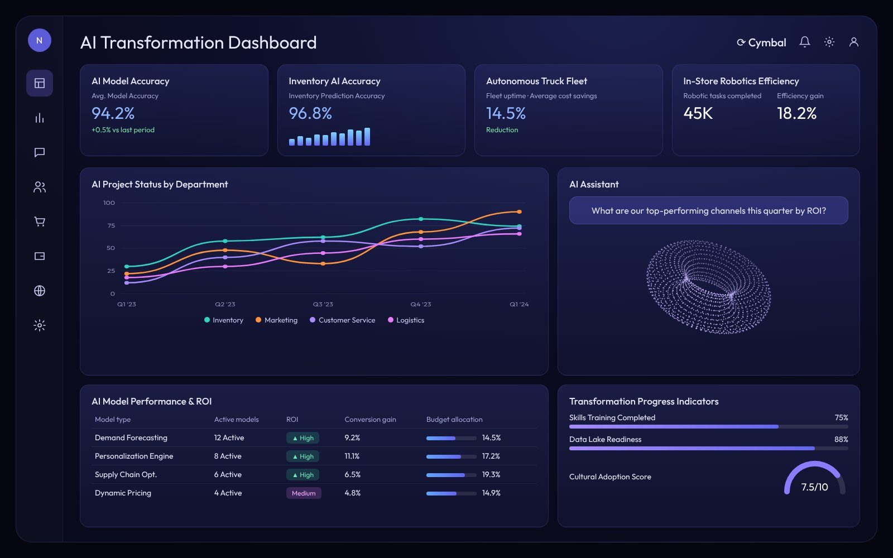
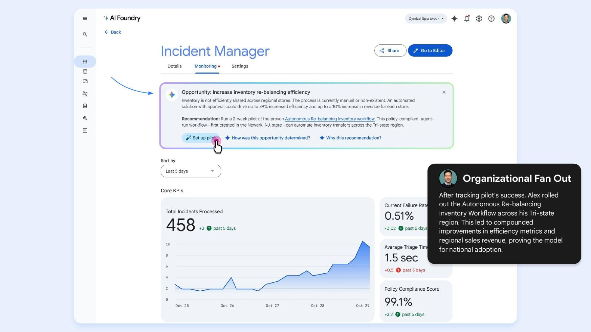

The question nobody was asking
The opportunity
In 2025, Google Cloud’s CEO asked teams to think about AI for all users. I took that literally and asked: who are we leaving out?
Two groups stood out. One was people with disabilities, which deserved specialists who could do it justice. The other was frontline workers: store associates, drivers, technicians. They make up about 70% of the global workforce, more than a billion people, and almost every enterprise AI product was being built for someone at a laptop.
If making an agent is so easy that every knowledge worker will be doing it, why shouldn’t frontline workers do it too?
Turning a hunch into a case
Research & business case
I started with what already existed: internal and public studies on frontline workers and how they felt about AI. Then I cross-referenced analyst research. The pattern was consistent. Frontline workers were ready for AI, and the products weren’t built for them.
That was enough to form a hypothesis and pitch for more work. I framed it in leadership’s terms: the size of the frontline market, the incremental revenue for Google if access were democratized, and the evidence that these workers were already adopting AI on their own.
of their daily tasks could be automated, frontline workers believe
Gartner Frontline Employee Experience Survey, 2023think new technology will make their jobs easier
Gartner Frontline Employee Experience Survey, 2023“Investments have often focused on knowledge workers instead, slowing progress for the front line.”
Gartner, August 2025A framework for how agents need to evolve
Vision
With my team and cross-functional partners, I defined three shifts that would make agents work for people who aren’t at a desk:
To make it tangible, I wrote a scenario anyone could picture: a sneaker launch on a chaotic morning at Cymbal Superstore, a fictional big-box retailer. Same launch, same agent, four very different workers.


Democratized authoring: the idea I’m proudest of
Concept
Everyone was focused on how agents would serve frontline workers. I wanted to know what it would look like if frontline workers could shape their own tools, without waiting for someone at headquarters to build them. So I took that as a premise and worked out how it could actually happen safely:
- The agent noticesIt sees how a worker handles a situation, like a workaround for an out-of-stock size, and suggests a new tool or agent.
- The worker tries itThe suggestion is tested with the person who inspired it.
- Policy checkIf it works, it’s automatically checked against company policy and safety rules.
- ApprovalCorporate operations approves it, or it’s approved automatically within guardrails when policies are clear and current.
- Shared across storesA dedicated agent helps employees create and share what works with other stores.

Foundry: a studio for building with agents
Concept & prototype
Foundry was our answer to two problems at once: the blank prompt, and trust. You describe a problem in plain language and get a blueprint for a solution, with compliance checks built in before anything is deployed. The blueprint was platform-agnostic, so it could be taken to any builder, not just Google’s.
What I did
Led the team through the business need and customer opportunity. Wrote the scenario. Made my own prototypes and sketches to show the direction. Drove collaboration with product and engineering.
What the team did
The concept was a partnership with product management. My UX team designed the flows and screens under my direction.



What happened
Outcome
- My team and partnersThe internal team was enthusiastic and helped develop the concepts.
- Engineering & product VPsI presented the vision to Google Cloud’s engineering and product VPs. They added it to the future roadmap.
- Senior leadershipThe platform-agnostic blueprint concept was green-lit and taken on by the product team as a pilot.
- Gemini EnterpriseOur work helped AppSheet apps surface as tools inside Agentspace, now Gemini Enterprise, through the A2A protocol.
The market caught up
Validation
My framework was dated July 2025. Here’s what happened next.
Walmart announced AI tools for its 1.5 million store associates: AI-prioritized tasks, speech translation in 44 languages, AR-guided picking, and step-by-step guidance for tricky processes.
Sept 2026Info-Tech Research GroupA year later, analysts still describe the store floor as retail AI’s missed opportunity, with most investment going to back-office work.
What I learned
Reflection
What worked
- Asking the question nobody was asking, and building the research case before asking for resources.
- Leading with the user, not the technology, as the way in.
- Democratized authoring resonated immediately. It was distinctive and defensible.
What I’d do differently
- Secure an executive sponsor with sustained access early. Supportive VPs aren’t the same as a champion.
- Put numbers on the business case sooner. Tying the frontline market to revenue earlier would have sped up buy-in.
- Get to a working prototype faster. Influence moves quicker with something people can touch.